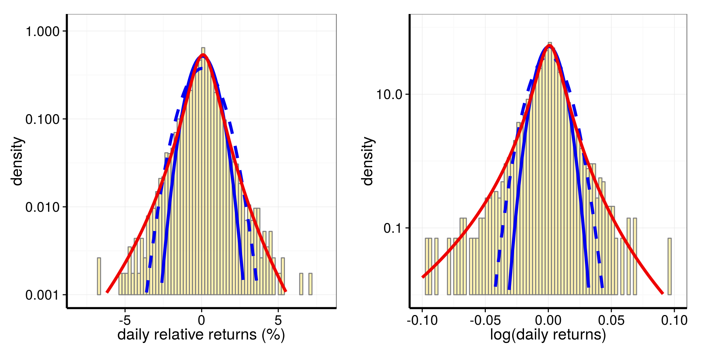
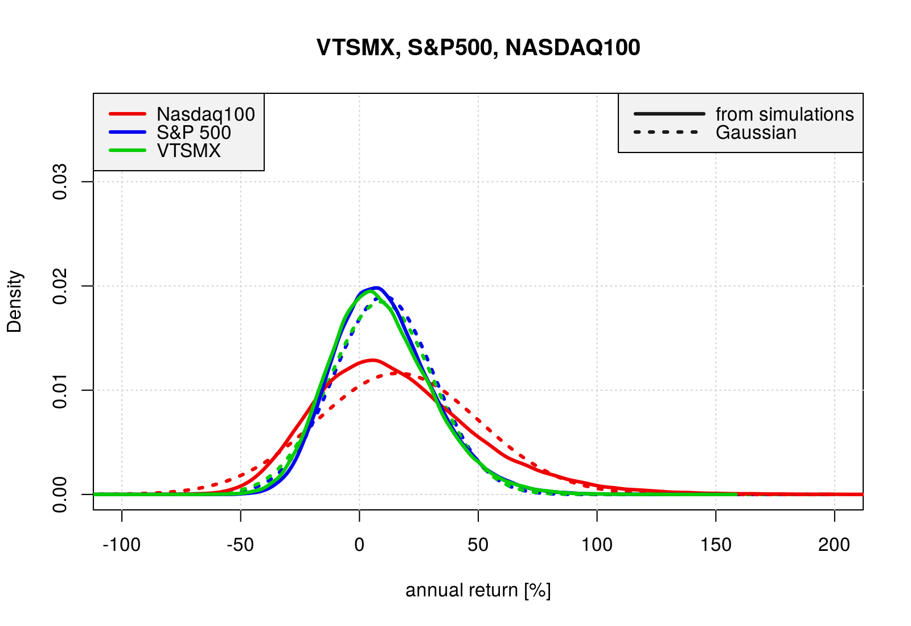
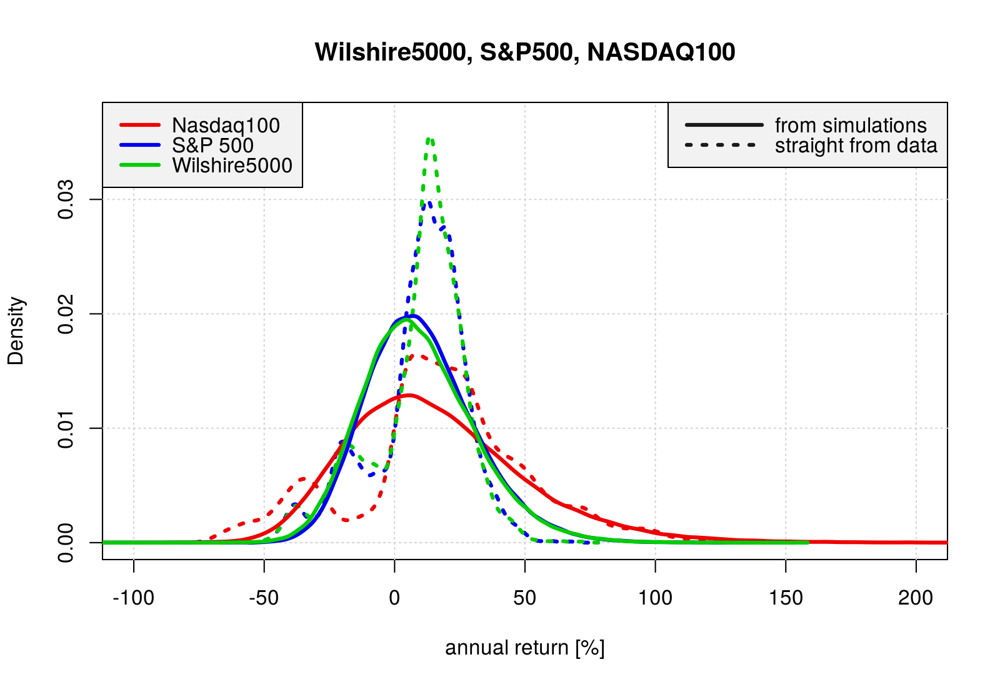
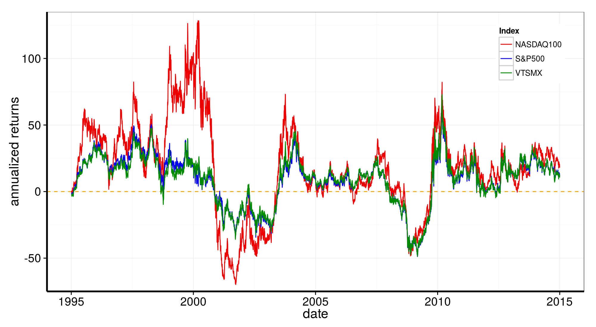
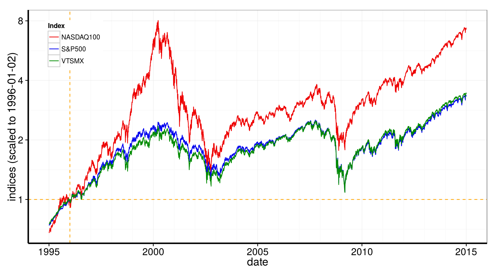

Stock Market Returns Distributions
Giovanni Fossati
PRELIMINARIES
Libraries needed for data processing and plotting:
library("dplyr")
library("tidyr")
library("ggplot2")
library("gridExtra")Introduction
Two interesting, blog posts:
- The Generalized Lambda Distribution and GLDEX Package: Fitting Financial Return Data
- The Generalized Lambda Distribution and GLDEX Package for Fitting Financial Return Data – Part 2
The GLDEX package is available on CRAN
Libraries and Other Setup
library("quantmod")
library("GLDEX")
library("MASS")library("scales")
source("./scripts/my_functions.R")start.date <- "1986-01-01"
end.date <- "2014-12-31"
xxlin <- seq(-25.0, 25.0, by = 0.1)
xxlog <- seq(-2.0, 2.0, by = 0.001)Three Broad Market Indices : Daily Returns
We will look at data of three broad market indices to get an idea of the movements of the market as a whole and obtain distributions/statistics to use in the Rent vs. Buy application as the basis of the simulated market returns.
Returns
We consider two (obviously related) quantities expressing the return of an asset described by an ordered set of values \({x_i}\):
log return: \[ {rl}_i = \log\left(\frac{x_i}{x_{i-1}}\right) \]
relative return: \[ {rr}_i = e^{rl_i} - 1 = \frac{x_i - x_{i-1}}{x_{i-1}} \]
Wilshire 5000
Fetch the data with quantmod:
# getSymbols("VTSMX", from = "1994-01-01")
getSymbols("VTSMX", from = start.date, to = end.date)
# [1] "VTSMX"
VTSMX.vec <- as.vector(VTSMX[, 4])Prepare returns:
WW <- prepare_data(data = VTSMX.vec, xlin = xxlin, xlog = xxlog)
WW$dates <- index(VTSMX)
WW$year <- substr(index(VTSMX), 1, 4)The function prepare_data() returns a list with (for each rr and rl): the data themselves, parameters of the best fit with the generalized Gamma distribution, distributions for this latter and two Gaussians fit to the data in two narrow (less than \(\sigma\) wide) ranges around the mean.
We add to this list dates from the timeseries index and year:
This is the structure of the resulting list:
str(WW)
# List of 12
# $ rr_data : num [1:5714] -0.299 0 1.8 0 0.688 ...
# $ rr_fit_gl: num [1:4] 0.077 2.552 -0.279 -0.218
# $ rr_fit_n1: Named num [1:2] 0.0402 1.0624
# ..- attr(*, "names")= chr [1:2] "mean" "sd"
# $ rr_fit_n2: Named num [1:2] 0.0586 0.7716
# ..- attr(*, "names")= chr [1:2] "mean" "sd"
# $ rr_distr :'data.frame': 501 obs. of 4 variables:
# ..$ x : num [1:501] -25 -24.9 -24.8 -24.7 -24.6 -24.5 -24.4 -24.3 -24.2 -24.1 ...
# ..$ y_gl : num [1:501] 0.0000036 0.00000367 0.00000373 0.0000038 0.00000386 ...
# ..$ y_norm1: num [1:501] 8.96e-122 8.20e-121 7.44e-120 6.68e-119 5.96e-118 ...
# ..$ y_norm2: num [1:501] 4.77e-230 3.19e-228 2.09e-226 1.35e-224 8.56e-223 ...
# $ rl_data : num [1:5714] -0.003 0 0.01784 0 0.00685 ...
# $ rl_fit_gl: num [1:4] 0.000784 255.660582 -0.285599 -0.212883
# $ rl_fit_n1: Named num [1:2] 0.000381 0.010626
# ..- attr(*, "names")= chr [1:2] "mean" "sd"
# $ rl_fit_n2: Named num [1:2] 0.000575 0.007711
# ..- attr(*, "names")= chr [1:2] "mean" "sd"
# $ rl_distr :'data.frame': 4001 obs. of 4 variables:
# ..$ x : num [1:4001] -2 -2 -2 -2 -2 ...
# ..$ y_gl : num [1:4001] 0.0000000436 0.0000000437 0.0000000438 0.0000000439 0.0000000441 ...
# ..$ y_norm1: num [1:4001] 0 0 0 0 0 0 0 0 0 0 ...
# ..$ y_norm2: num [1:4001] 0 0 0 0 0 0 0 0 0 0 ...
# $ dates : Date[1:5715], format: "1992-04-27" "1992-04-28" "1992-04-29" ...
# $ year : chr [1:5715] "1992" "1992" "1992" "1992" ...Distributions of relative returns and of log returns:
The histograms are the return data, with overlayed
- in red the generalized Gamma distribution, and
- in blue the two Gaussians fit to the “core” of the data.
It is quite obvious how much better the generalized Gamma distribution describes the data, both their “code” and the long fat tails.

S&P 500
Some treatment as the Wilshire 5000 data.
Fetch the data with quantmod:
getSymbols("^GSPC", from = start.date, to = end.date)
# [1] "GSPC"
GSPC.vec <- as.vector(GSPC[, 4])and prepare with the prepare_data() function:
SP <- prepare_data(data = GSPC.vec, xlin = xxlin, xlog = xxlog)
SP$dates <- index(GSPC)
SP$year <- substr(index(GSPC), 1, 4)This is the structure of the resulting list:
str(SP)
# List of 12
# $ rr_data : num [1:7311] 0.615 -0.109 1.495 -2.727 -0.894 ...
# $ rr_fit_gl: num [1:4] 0.0702 2.5498 -0.2594 -0.2118
# $ rr_fit_n1: Named num [1:2] 0.0453 1.0377
# ..- attr(*, "names")= chr [1:2] "mean" "sd"
# $ rr_fit_n2: Named num [1:2] 0.0559 0.7676
# ..- attr(*, "names")= chr [1:2] "mean" "sd"
# $ rr_distr :'data.frame': 501 obs. of 4 variables:
# ..$ x : num [1:501] -25 -24.9 -24.8 -24.7 -24.6 -24.5 -24.4 -24.3 -24.2 -24.1 ...
# ..$ y_gl : num [1:501] 0.0000023 0.00000234 0.00000239 0.00000243 0.00000248 ...
# ..$ y_norm1: num [1:501] 1.22e-127 1.24e-126 1.26e-125 1.26e-124 1.24e-123 ...
# ..$ y_norm2: num [1:501] 2.10e-232 1.47e-230 1.00e-228 6.77e-227 4.49e-225 ...
# $ rl_data : num [1:7311] 0.00614 -0.00109 0.01484 -0.02765 -0.00898 ...
# $ rl_fit_gl: num [1:4] 0.000714 255.280258 -0.265821 -0.206393
# $ rl_fit_n1: Named num [1:2] 0.000433 0.010393
# ..- attr(*, "names")= chr [1:2] "mean" "sd"
# $ rl_fit_n2: Named num [1:2] 0.00055 0.00768
# ..- attr(*, "names")= chr [1:2] "mean" "sd"
# $ rl_distr :'data.frame': 4001 obs. of 4 variables:
# ..$ x : num [1:4001] -2 -2 -2 -2 -2 ...
# ..$ y_gl : num [1:4001] 0 0 0 0 0 0 0 0 0 0 ...
# ..$ y_norm1: num [1:4001] 0 0 0 0 0 0 0 0 0 0 ...
# ..$ y_norm2: num [1:4001] 0 0 0 0 0 0 0 0 0 0 ...
# $ dates : Date[1:7312], format: "1986-01-02" "1986-01-03" "1986-01-06" ...
# $ year : chr [1:7312] "1986" "1986" "1986" "1986" ...Distributions of relative returns and of log returns:
p1 <- plot_distr_rel_returns(data = SP$rr_data, fits = SP$rr_distr)
p2 <- plot_distr_log_returns(data = SP$rl_data, fits = SP$rl_distr)
grid.arrange(p1, p2, nrow=1)
NASDAQ 100
Fetch the data with quantmod:
getSymbols("^NDX", from = start.date, to = end.date)
# [1] "NDX"
NDX.vec <- as.vector(NDX[, 4])NN <- prepare_data(data = NDX.vec, xlin = xxlin, xlog = xxlog)
NN$dates <- index(NDX)
NN$year <- substr(index(NDX), 1, 4)This is the structure of the resulting list:
str(NN)
# List of 12
# $ rr_data : num [1:7311] -0.537 -0.149 1.868 -1.227 -1.799 ...
# $ rr_fit_gl: num [1:4] 0.113 1.68 -0.265 -0.213
# $ rr_fit_n1: Named num [1:2] 0.0558 1.4476
# ..- attr(*, "names")= chr [1:2] "mean" "sd"
# $ rr_fit_n2: Named num [1:2] 0.0949 0.8966
# ..- attr(*, "names")= chr [1:2] "mean" "sd"
# $ rr_distr :'data.frame': 501 obs. of 4 variables:
# ..$ x : num [1:501] -25 -24.9 -24.8 -24.7 -24.6 -24.5 -24.4 -24.3 -24.2 -24.1 ...
# ..$ y_gl : num [1:501] 0.0000111 0.0000112 0.0000114 0.0000116 0.0000119 ...
# ..$ y_norm1: num [1:501] 2.43e-66 8.01e-66 2.63e-65 8.58e-65 2.79e-64 ...
# ..$ y_norm2: num [1:501] 3.57e-171 8.05e-170 1.79e-168 3.94e-167 8.55e-166 ...
# $ rl_data : num [1:7311] -0.00539 -0.00149 0.01851 -0.01235 -0.01816 ...
# $ rl_fit_gl: num [1:4] 0.00116 168.5565 -0.27619 -0.20523
# $ rl_fit_n1: Named num [1:2] 0.000509 0.014442
# ..- attr(*, "names")= chr [1:2] "mean" "sd"
# $ rl_fit_n2: Named num [1:2] 0.000915 0.008969
# ..- attr(*, "names")= chr [1:2] "mean" "sd"
# $ rl_distr :'data.frame': 4001 obs. of 4 variables:
# ..$ x : num [1:4001] -2 -2 -2 -2 -2 ...
# ..$ y_gl : num [1:4001] 0.000000127 0.000000127 0.000000127 0.000000128 0.000000128 ...
# ..$ y_norm1: num [1:4001] 0 0 0 0 0 0 0 0 0 0 ...
# ..$ y_norm2: num [1:4001] 0 0 0 0 0 0 0 0 0 0 ...
# $ dates : Date[1:7312], format: "1986-01-02" "1986-01-03" "1986-01-06" ...
# $ year : chr [1:7312] "1986" "1986" "1986" "1986" ...Distributions of relative returns and of log returns:
p1 <- plot_distr_rel_returns(data = NN$rr_data, fits = NN$rr_distr)
p2 <- plot_distr_log_returns(data = NN$rl_data, fits = NN$rl_distr)
grid.arrange(p1, p2, nrow=1)
Three Broad Market Indices : Annual Returns
Annual from Daily Returns
Simulating annual returns by compounding daily returns drawn from the best fit generalized gamma distributions.
# typical number of market days in a year is ~252
ndays <- 252
# repeats
N <- 1e5
# N <- 1e6
set.seed(1212)
test_rr.W5000 <- rep(0, N)
for(j in 1:N) {
dummy <- rgl(ndays, WW$rr_fit_gl)
test_rr.W5000[j] <- (cumprod(1 + dummy/100)[ndays] - 1.0)*100
}
test_rr.SP500 <- rep(0, N)
for(j in 1:N) {
dummy <- rgl(ndays, SP$rr_fit_gl)
test_rr.SP500[j] <- (cumprod(1 + dummy/100)[ndays] - 1.0)*100
}
test_rr.N100 <- rep(0, N)
for(j in 1:N) {
dummy <- rgl(ndays, NN$rr_fit_gl)
test_rr.N100[j] <- (cumprod(1 + dummy/100)[ndays] - 1.0)*100
}# typical number of market days in a year is ~252
ndays <- 252
# repeats
N <- 1e5
# N <- 1e6
set.seed(1414)
test_rr_n1.W5000 <- rep(0, N)
print(ndays)
# [1] 252
print(WW$rr_fit_n1)
# mean sd
# 0.0402238 1.0624322
for(j in 1:N) {
dummy <- rnorm(ndays, WW$rr_fit_n1)
test_rr_n1.W5000[j] <- (cumprod(1 + dummy/100)[ndays] - 1.0)*100
}
test_rr_n1.SP500 <- rep(0, N)
for(j in 1:N) {
dummy <- rnorm(ndays, SP$rr_fit_n1)
test_rr_n1.SP500[j] <- (cumprod(1 + dummy/100)[ndays] - 1.0)*100
}
test_rr_n1.N100 <- rep(0, N)
for(j in 1:N) {
dummy <- rnorm(ndays, NN$rr_fit_n1)
test_rr_n1.N100[j] <- (cumprod(1 + dummy/100)[ndays] - 1.0)*100
}xx2 <- seq(-200, 200, by = 1.0)
yy.W5000.n <- dnorm(xx2, mean = mean(test_rr.W5000), sd = sd(test_rr.W5000))
yy.SP500.n <- dnorm(xx2, mean = mean(test_rr.SP500), sd = sd(test_rr.SP500))
yy.N100.n <- dnorm(xx2, mean = mean(test_rr.N100), sd = sd(test_rr.N100))
plot(density(test_rr.N100), type = "n",
xlim = c(-100.0, 200.0),
ylim = c(0.0, 0.037),
xlab = "annual return [%]",
main = "Wilshire5000, S&P500, NASDAQ100")
grid()
lines(xx2, yy.N100.n, col = "red2", lwd = 3, lty = 3)
lines(xx2, yy.SP500.n, col = "blue2", lwd = 3, lty = 3)
lines(xx2, yy.W5000.n, col = "green3", lwd = 3, lty = 3)
lines(density(test_rr.N100), col = "red2", lwd = 3)
lines(density(test_rr.SP500), col = "blue2", lwd = 3)
lines(density(test_rr.W5000), col = "green3", lwd = 3)
legend("topleft", bty = "y", bg = "grey95", x.intersp = 0.7, y.intersp = 0.8,
legend = c("Nasdaq100", "S&P 500", "Wilshire5000"),
lty = 1, lwd = 3,
col = c("red2", "blue2", "green3"),
cex = 1.0)
legend("topright", bty = "y", bg = "grey95", x.intersp = 0.7, y.intersp = 0.8,
legend = c("from simulations", "Gaussian"),
lty = c(1, 3), lwd = 3, seg.len = 4,
col = c("grey10", "grey10"),
cex = 1.0)
Annual straight from data
The simulated daily-compounded annual returns can be compared with a crude estimate of annual returns obtained straight from the data by looking at 252-day-lagged values.
For this analysis we restricted the data to the 1994-2014 interval, in order to have the same coverage for the three indices.
WWb <- VTSMX.vec[WW$year >= 1994]
SPb <- GSPC.vec[SP$year >= 1994]
NNb <- NDX.vec[NN$year >= 1994]
WWd <- index(VTSMX)[WW$year >= 1994]
SPd <- index(GSPC)[SP$year >= 1994]
NNd <- index(NDX)[NN$year >= 1994]
W5000_rla <- diff(log(WWb), lag = 252)
W5000_rra <- 100.0*(exp(W5000_rla)-1)
SP500_rla <- diff(log(SPb), lag = 252)
SP500_rra <- 100.0*(exp(SP500_rla)-1)
N100_rla <- diff(log(NNb), lag = 252)
N100_rra <- 100.0*(exp(N100_rla)-1)
rr.df <- data.frame(date = WWd[-(1:252)], WW = W5000_rra, SP = SP500_rra, NN = N100_rra)
rr.df$time <- as.POSIXct(rr.df$date)
rr.df$WWidx <- WWb[-(1:252)]
rr.df$SPidx <- SPb[-(1:252)]
rr.df$NNidx <- NNb[-(1:252)]
rr.df$WWidx_n <- WWb[-(1:252)]/rr.df$WWidx[rr.df$date == "1996-01-02"]
rr.df$SPidx_n <- SPb[-(1:252)]/rr.df$SPidx[rr.df$date == "1996-01-02"]
rr.df$NNidx_n <- NNb[-(1:252)]/rr.df$NNidx[rr.df$date == "1996-01-02"]This crude estimates of annual returns are plotted here with dotted distributions, which exhibit a significant degree of irregularity. In particular all indices, being all stock-based, show similar double humped structure with a main hump at moderate positive returns and a smaller one at around 10-40% negative returns.
These two humps are somewhat disconnected, reflecting the presence of almost two different market behaviors in the last 20 years, with two period of major losses almost isolated in the midst of a long term steady-ish rising trend (see plots further down).
plot(density(W5000_rra), type = "n",
xlim = c(-100.0, 200.0),
ylim = c(0.0, 0.037),
xlab = "annual return [%]",
main = "Wilshire5000, S&P500, NASDAQ100")
grid()
lines(density(N100_rra), col = "red2", lwd = 3, lty = 3)
lines(density(SP500_rra), col = "blue2", lwd = 3, lty = 3)
lines(density(W5000_rra), col = "green3", lwd = 3, lty = 3)
lines(density(test_rr.N100), col = "red2", lwd = 3)
lines(density(test_rr.SP500), col = "blue2", lwd = 3)
lines(density(test_rr.W5000), col = "green3", lwd = 3)
legend("topleft", bty = "y", bg = "grey95", x.intersp = 0.7, y.intersp = 0.8,
legend = c("Nasdaq100", "S&P 500", "Wilshire5000"),
lty = 1, lwd = 3,
col = c("red2", "blue2", "green3"),
cex = 1.0)
legend("topright", bty = "y", bg = "grey95", x.intersp = 0.7, y.intersp = 0.8,
legend = c("from simulations", "straight from data"),
lty = c(1, 3), lwd = 3, seg.len = 4,
col = c("grey10", "grey10"),
cex = 1.0)
Time-series plots of returns
tmp <- dplyr::select(rr.df, date, time, WW, SP, NN) %>%
gather(. , name, value, NN, SP, WW)
ggplot(data = tmp, aes(x = date, y = value)) + theme_bw() +
theme(axis.title = element_text(size = 16),
axis.text= element_text(size = 14),
axis.line = element_line(size = 1),
legend.position = c(0.9, 0.85)) +
coord_cartesian(ylim = c(-75.0, 135.0)) +
xlab("date") +
ylab("annualized returns") +
geom_hline(h=0, lty = 2, col = "orange") +
geom_line(aes(color = name)) +
scale_colour_manual(values = c("red2", "blue2", "green4"), name = "Index",
labels = c("NASDAQ100", "S&P500", "Wilshire5000"))
Time-series plots of indices (normalized to 1996-01-02)
tmp <- dplyr::select(rr.df, date, time, WWidx_n, SPidx_n, NNidx_n) %>%
gather(. , name, value, NNidx_n, SPidx_n, WWidx_n)
ggplot(data = tmp, aes(x = date, y = value)) + theme_bw() +
theme(axis.title = element_text(size = 16),
axis.text= element_text(size = 14),
axis.line = element_line(size = 1),
legend.position = c(0.1, 0.85)) +
xlab("date") +
ylab("indices (scaled to 1996-01-02)") +
scale_x_date(minor_breaks = "1 year") +
scale_y_log10(breaks = c(1, 2, 4, 8)) +
geom_hline(h = 0, lty = 2, col = "orange") +
geom_vline(xintercept = as.numeric(as.Date("1996-01-02")), lty = 2, col = "orange") +
geom_line(aes(color = name)) +
scale_colour_manual(values = c("red2", "blue2", "green4"), name = "Index",
labels = c("NASDAQ100", "S&P500", "Wilshire5000"))
APPENDIX
Functions
Source code of the user-defined functions in scripts/my_functions.R
#===================================================================================================
prepare_data <- function(data = NULL, xlin = NULL, xlog = NULL) {
returns_log <- diff(log(data), lag = 1)
returns_rel <- 100.0*(exp(returns_log) - 1)
#---------------------------------------------------------------------
# relative returns (linear, %)
#---------------------------------------------------------------------
# Fit with Generalized Lambda Distribution:
rr_fit_gl <- fun.RMFMKL.ml(returns_rel)
rr_fit_gl_y <- dgl(xlin, rr_fit_gl)
# Fit with a Normal distribution, on the core of the data distribution
rr_mean <- mean(returns_rel)
rr_fit_norm1 <- fitdistr(returns_rel[abs(returns_rel - rr_mean) <= 5.0], "normal")
rr_fit_norm2 <- fitdistr(returns_rel[abs(returns_rel - rr_mean) <= 2.0], "normal")
# rr_fit_norm1 <- fitdistr(returns_rel[abs(returns_rel) <= 5.0], "normal")
# rr_fit_norm2 <- fitdistr(returns_rel[abs(returns_rel) <= 2.0], "normal")
rr_fit_norm1_y <- dnorm(xlin, mean = rr_fit_norm1$estimate[1], sd = rr_fit_norm1$estimate[2])
rr_fit_norm2_y <- dnorm(xlin, mean = rr_fit_norm2$estimate[1], sd = rr_fit_norm2$estimate[2])
rr_fit_n1 <- c(rr_fit_norm1$estimate[1], rr_fit_norm1$estimate[2])
rr_fit_n2 <- c(rr_fit_norm2$estimate[1], rr_fit_norm2$estimate[2])
returns_rel_distr.df <- data.frame(x = xlin,
y_gl = rr_fit_gl_y,
y_norm1 = rr_fit_norm1_y,
y_norm2 = rr_fit_norm2_y)
#---------------------------------------------------------------------
# log returns
#---------------------------------------------------------------------
# Fit with Generalized Lambda Distribution:
rl_fit_gl <- fun.RMFMKL.ml(returns_log)
rl_fit_gl_y <- dgl(xlog, rl_fit_gl)
# Fit with a Normal distribution, on the core of the data distribution
rl_mean <- mean(returns_log)
rl_fit_norm1 <- fitdistr(returns_log[abs(returns_log - rl_mean) <= 0.05], "normal")
rl_fit_norm2 <- fitdistr(returns_log[abs(returns_log - rl_mean) <= 0.02], "normal")
# rl_fit_norm1 <- fitdistr(returns_log[abs(returns_log) <= 0.05], "normal")
# rl_fit_norm2 <- fitdistr(returns_log[abs(returns_log) <= 0.02], "normal")
rl_fit_norm1_y <- dnorm(xlog, mean = rl_fit_norm1$estimate[1], sd = rl_fit_norm1$estimate[2])
rl_fit_norm2_y <- dnorm(xlog, mean = rl_fit_norm2$estimate[1], sd = rl_fit_norm2$estimate[2])
rl_fit_n1 <- c(rl_fit_norm1$estimate[1], rl_fit_norm1$estimate[2])
rl_fit_n2 <- c(rl_fit_norm2$estimate[1], rl_fit_norm2$estimate[2])
returns_log_distr.df <- data.frame(x = xlog,
y_gl = rl_fit_gl_y,
y_norm1 = rl_fit_norm1_y,
y_norm2 = rl_fit_norm2_y)
#---------------------------------------------------------------------
list( rr_data = returns_rel,
rr_fit_gl = rr_fit_gl,
rr_fit_n1 = rr_fit_n1,
rr_fit_n2 = rr_fit_n2,
rr_distr = returns_rel_distr.df,
rl_data = returns_log,
rl_fit_gl = rl_fit_gl,
rl_fit_n1 = rl_fit_n1,
rl_fit_n2 = rl_fit_n2,
rl_distr = returns_log_distr.df
)
}
#===================================================================================================
mylog_trans <- function(base = exp(1), from = 0) {
trans <- function(x) log(x, base) - from
inv <- function(x) base^(x + from)
trans_new("mylog", trans, inv, log_breaks(base = base), domain = c(base^from, Inf))
}
#===================================================================================================
# plot_return_distributions <- function(data = NULL, fits = NULL) {
plot_distr_rel_returns <- function(data = NULL, fits = NULL) {
df <- data.frame(returns = data, stringsAsFactors = FALSE)
pl.distr <- ggplot(data = df, aes(x = returns)) + theme_bw() +
theme(axis.title = element_text(size = 16),
axis.text= element_text(size = 14),
axis.line = element_line(size = 1)) +
xlim(-8.0, 8.0) +
xlab("daily relative returns (%)") +
ylab("density") +
geom_histogram(aes(y = ..density..), stat = "bin", drop = TRUE,
position = "identity",
binwidth = 0.2,
color = "grey50", fill = "gold", alpha = 0.3) +
geom_line(data = fits, aes(x = x, y = y_norm1), color = "blue2", lty = 2, lwd = 1.5) +
geom_line(data = fits, aes(x = x, y = y_norm2), color = "blue2", lwd = 1.5) +
geom_line(data = fits, aes(x = x, y = y_gl), color = "red2", lwd = 1.5) +
scale_y_continuous(trans = mylog_trans(base = 10, from = -3),
limits = c(0.001, 1.1),
breaks = c(0.001, 0.01, 0.1, 1.0))
pl.distr
}
#===================================================================================================
# plot_return_distributions_ALT <- function(data = NULL, fits = NULL, xlim = NULL, binwidth = NULL) {
# plot_return_distributions_ALT <- function(data = NULL, fits = NULL) {
plot_distr_log_returns <- function(data = NULL, fits = NULL) {
df <- data.frame(returns = data, stringsAsFactors = FALSE)
hh <- hist(data, breaks = seq(-2.5, 2.5, by =0.0025), plot = FALSE)
ymax <- 10.0**ceiling(log10(max(hh$density))) + 0.1
pl.distr <- ggplot(data = df, aes(x = returns)) + theme_bw() +
theme(axis.title = element_text(size = 16),
axis.text= element_text(size = 14),
axis.line = element_line(size = 1)) +
xlim(-0.1, 0.1) +
xlab("log(daily returns)") +
ylab("density") +
geom_histogram(aes(y = ..density..), stat = "bin", drop = TRUE,
position = "identity",
binwidth = 0.0025,
color = "grey50", fill = "gold", alpha = 0.3) +
geom_line(data = fits, aes(x = x, y = y_norm1), color = "blue2", lty = 2, lwd = 1.5) +
geom_line(data = fits, aes(x = x, y = y_norm2), color = "blue2", lwd = 1.5) +
geom_line(data = fits, aes(x = x, y = y_gl), color = "red2", lwd = 1.5) +
scale_y_continuous(trans = mylog_trans(base = 10, from = -2),
limits = c(0.01, ymax))
# breaks = c(0.001, 0.01, 0.1, 1.0))
pl.distr
}
#===================================================================================================R Session Info
sessionInfo()
# R version 3.1.3 (2015-03-09)
# Platform: x86_64-pc-linux-gnu (64-bit)
# Running under: Ubuntu 14.04.2 LTS
#
# locale:
# [1] LC_CTYPE=en_US.UTF-8 LC_NUMERIC=C LC_TIME=en_US.UTF-8
# [4] LC_COLLATE=C LC_MONETARY=en_US.UTF-8 LC_MESSAGES=en_US.UTF-8
# [7] LC_PAPER=en_US.UTF-8 LC_NAME=C LC_ADDRESS=C
# [10] LC_TELEPHONE=C LC_MEASUREMENT=en_US.UTF-8 LC_IDENTIFICATION=C
#
# attached base packages:
# [1] grid stats graphics grDevices utils datasets methods base
#
# other attached packages:
# [1] scales_0.2.4 MASS_7.3-41 GLDEX_2.0.0.2 cluster_2.0.1 quantmod_0.4-4 TTR_0.22-0
# [7] xts_0.9-7 zoo_1.7-12 gridExtra_0.9.1 ggplot2_1.0.1 tidyr_0.2.0 dplyr_0.4.2
# [13] knitr_1.10.5
#
# loaded via a namespace (and not attached):
# [1] DBI_0.3.1 R6_2.0.1 Rcpp_0.11.6 assertthat_0.1 colorspace_1.2-6
# [6] digest_0.6.8 evaluate_0.7 formatR_1.2 gtable_0.1.2 htmltools_0.2.6
# [11] labeling_0.3 lattice_0.20-31 lazyeval_0.1.10 magrittr_1.5 munsell_0.4.2
# [16] parallel_3.1.3 plyr_1.8.3 proto_0.3-10 reshape2_1.4.1 rmarkdown_0.7
# [21] stringi_0.5-5 stringr_1.0.0 tools_3.1.3 yaml_2.1.13